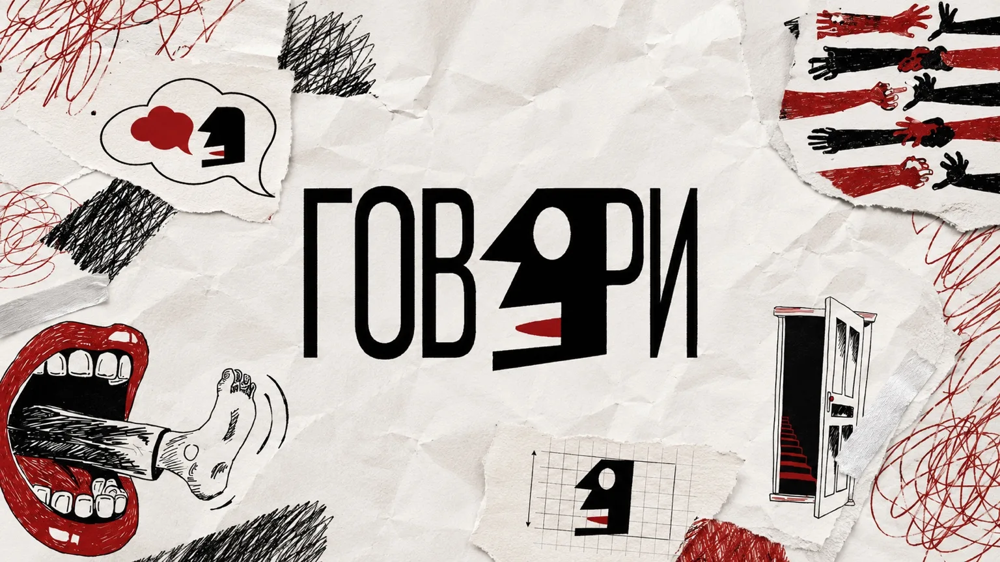
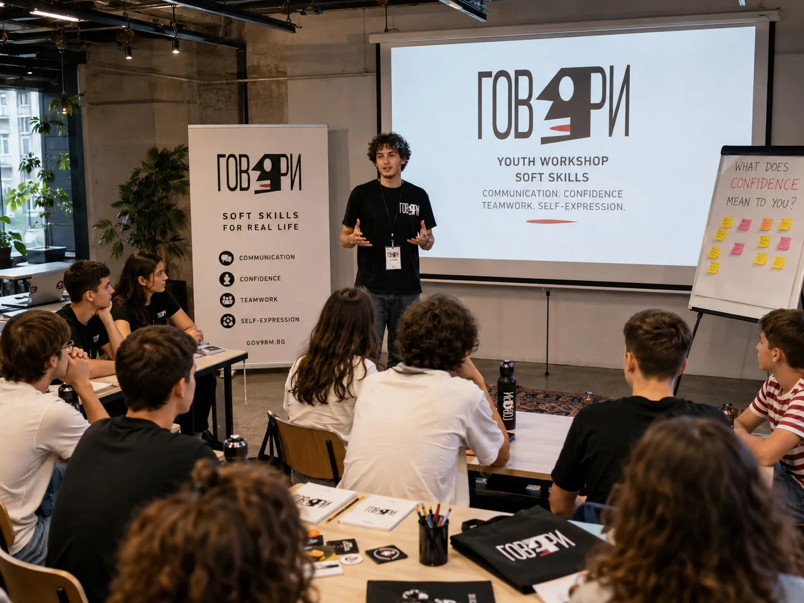
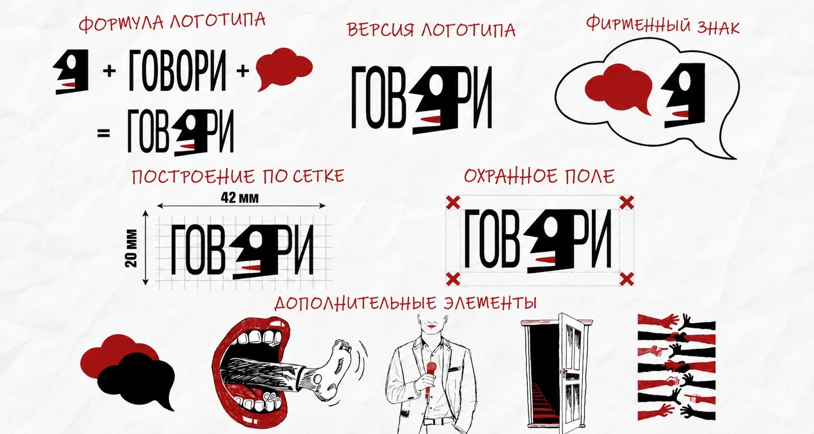
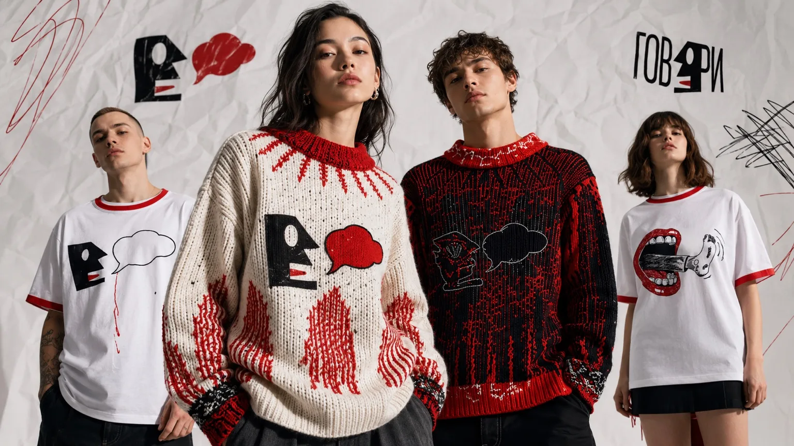
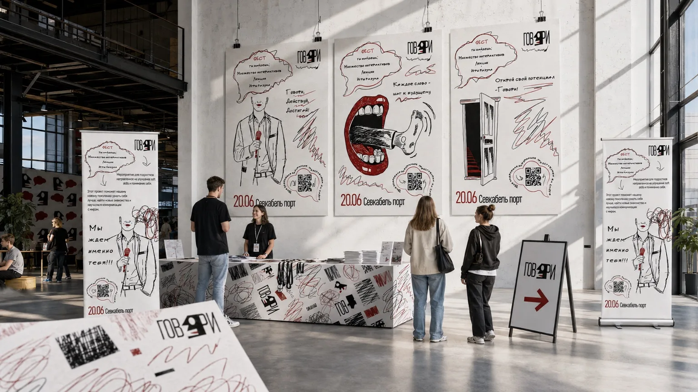
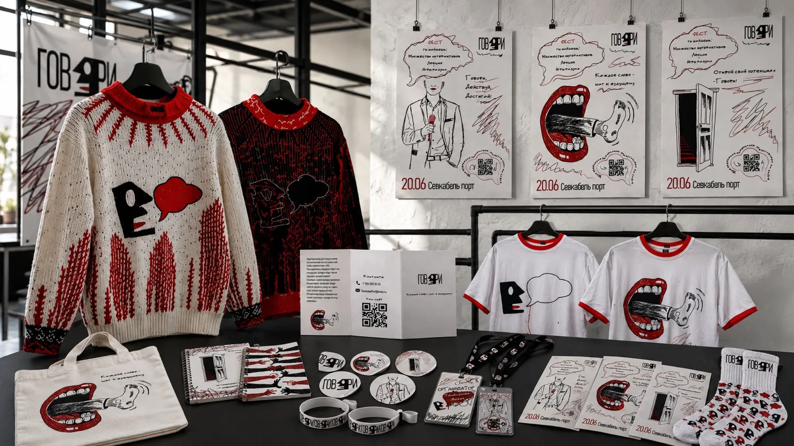
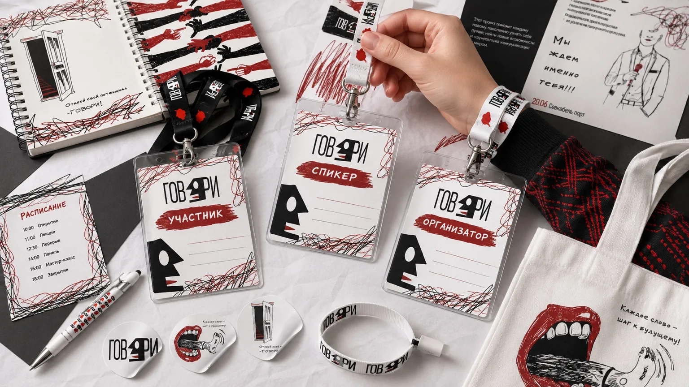
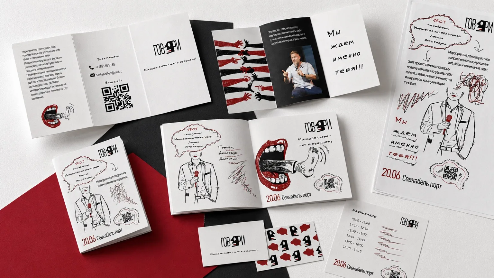

Образ речи
Профиль встроен в название, а речевое облако используется как самостоятельный элемент. Это связывает логотип с темой проекта.
Айдентика · коммуникационный дизайн
Айдентика образовательного проекта о речи и уверенном общении.

Контекст
Передать энергию живого общения и объединить разные форматы: афиши, печатные материалы, одежду и оформление события.
Профиль говорящего человека стал основой знака. Речевые облака, красные акценты и рисованная графика продолжают тему диалога на носителях.
Логотип, фирменная графика, иллюстрации, афиши, полиграфия и мерч.
Профиль встроен в название, а речевое облако используется как самостоятельный элемент. Это связывает логотип с темой проекта.
Чёрный и белый образуют основу. Красный выделяет акценты, а рукописные штрихи добавляют графике эмоциональность.
На афишах графика задаёт композицию, в буклетах уступает место тексту, на одежде становится главным изображением.
Макеты и визуализации







Итог
Собрана учебная айдентика и серия носителей. Визуализации показывают предполагаемое оформление события и применение графики.
Обсудить работу в команде ↗{kind=link}
{kind=link}
{kind=link}
{kind=link}
{kind=link}
{kind=link}
{kind=link}